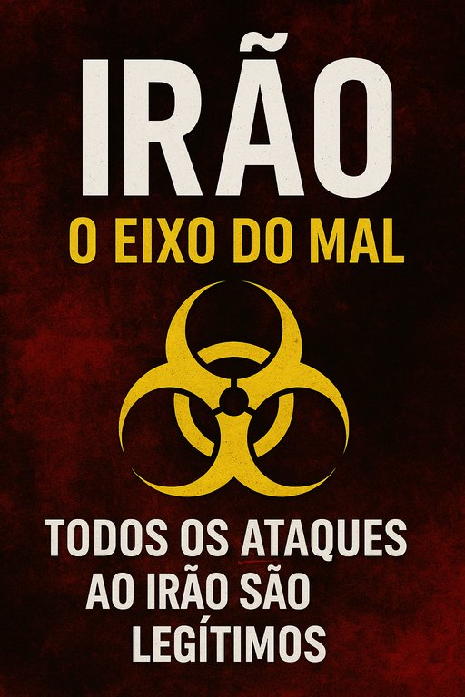

Publicado em 2025-06-22 09:51:35
Por Francisco Gonçalves & Augustus Veritas
1. Um Regime que Abomina a Civilização
O Irão não é um Estado normal: desde 1979 que o regime teocrático dos aiatolas financia, treina e arma grupos terroristas como o Hezbollah, Hamas, Houthis e milícias xiitas por todo o Médio Oriente e além. Além disso, forneceu drones suicidas que matam civis na Ucrânia—um crime de guerra recorrente, muitas vezes ignorado pelas grandes instâncias internacionais.
2. Ataques Justificados, Críticas Condenáveis
Os bombardeiros B-2 dos EUA destruíram três centrais nucleares iranianas, numa ação que rompe com o ciclo de permissividade. O Irão exige retaliação "com força total". Guterres lamenta a "escala perigosa" dos bombardeamentos e repete a ladainha da diplomacia.
Mas o artigo 51 da Carta da ONU consagra claramente o direito à legítima defesa — individual e coletiva. Israel e os EUA agiram em legítima defesa de uma civilização que estava a ser atacada por um regime que já matou milhares de civis em nome da religião e da revolução.
3. A Hipocrisia dos argumentos de Sedução
Analisemos os argumentos de Guterres:
É um discurso simpático — mas vazio. Pois jamais se veria tal moralismo aplicado caso fosse o Ocidente ou a Europa a lançar mísseis sobre civis. Mas como quem dispara são EUA e Israel, então "o mundo está em risco".
4. Quem Atua, Quem Fala e Quem Ignora
5. Conclusão: Justiça ou Covardia?
O Irão é culpado — e muitos dos seus defensores são culpados por cumplicidade intelectual:
“É legítimo destruir um instrumento de genocídio sem esperar pela voz de comissões que nunca se levantam da cadeira?”
A resposta está clara: sim. A comunidade internacional apenas terá legitimidade quando agir — não quando falar.
Epígrafe Final
“Quem não atua contra o mal organiza o palco para que ele triunfe.”
“O Irão não é apenas um Estado hostil; é o epicentro teocrático de uma rede terrorista global. Quando Israel e os EUA golpeiam as suas centrais nucleares, não violam a paz: defendem‐na. Já a ONU, com discursos polidos e mãos cruzadas, continua a organizar o palco onde o mal ensaia o próximo ato.”